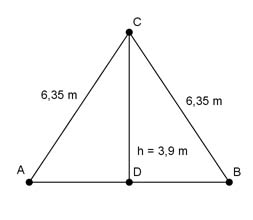

Pythagoras Aufgabe 20 a) Berechnen Sie die Fläche A des Dreiecks in m². b) Die Fläche wird gestrichen. Der Verbrauch an Farbe beträgt 1 l pro 5 m². Wie viel l Farbe sind nötig?  a) Im gleichschenkligen Dreieck halbiert die Höhe die Grundseite. Satz von Pythagoras im Dreieck ADC: AC² = AD² + DC² | -DC² AD² = AC² - DC² AD = 6,35² m² - 3,9² m² = 25,1 m² |√ AD = = 5 m AB = 2 * AD = 2 * 5 m = 10 m AB * h 10 m * 3,9 m A = -------- = -------------- = 19,5 m² 2 2 b) 1 l Menge = l/m² * A = ------ * 19,5 m² = 3,9 l 5 m²